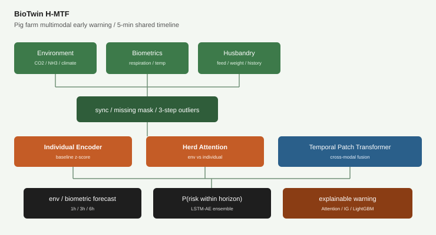

BioTwin H-MTF
A multimodal early-warning algorithm that aligns pig-farm environment sensors, individual biometrics, and husbandry data on a shared 5-minute timeline, then watches both animal-level change and herd-wide change together.

One model jointly produces environment and biometric forecasts, risk probability, and cause ranking. It tracks deviation from each animal's own baseline rather than an absolute threshold, and it also measures how early the alert fires.